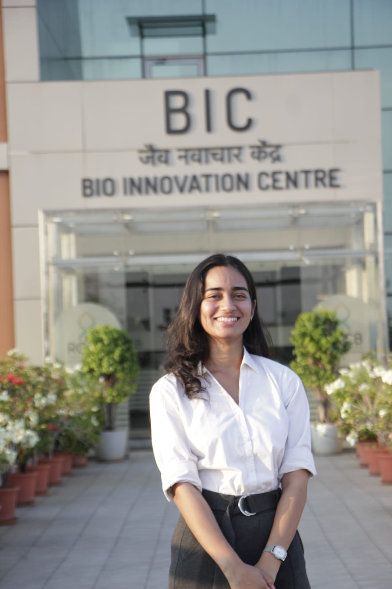

computational biologist | bioinformatics & lab automation innovator

I am Sawani Dixit, a Bachelor of Technology graduate in Biotechnology (2025) from Khwaja Moinuddin Chishti Language University, Lucknow, with a CGPA of 8.29/10. My work sits at the intersection of structural biology, molecular dynamics, and computational drug discovery.
With hands-on experience at Rajiv Gandhi Centre for Biotechnology (RGCB), I have developed automated Python pipelines that reduce data processing time by 30%, managed multi-terabyte molecular simulation datasets, and executed multi-omics analyses integrating metabolomics and genomics to identify disease biomarkers.
Currently, I serve as a Health Communication Intern at the Indian Council of Medical Research (ICMR), where I translate complex biomedical science into impactful public health narratives — a role that deepens my appreciation for the societal dimension of research.
I believe reproducibility and rigor are the foundation of meaningful science. Every pipeline I build prioritizes quality control, parallelization, and clear documentation — so that findings can be trusted, extended, and built upon by the broader research community.
Received the Best Paper Award at the national conference on Sustainable Research & Technological Development for the work titled "Environmental Management & Water Conservation."
Delivered an invited oral presentation on "Smart Cities & Green Buildings" at the national conference, recognized for interdisciplinary research excellence.
"Deciphering structural conformational dynamics in tubulin dimer using molecular dynamics simulation" — a novel contribution to computational structural biology.
Designed and deployed parallelized Python pipelines at RGCB that cut bioinformatics data processing time by 30% while maintaining zero data integrity issues across 50+ datasets.
Completed the IIT-affiliated NPTEL course in Computational Neuroscience, reinforcing expertise at the intersection of neuroscience, biophysics, and computational modeling.
Certified by NIELIT in Foundation IT, Programming & Applications. Active National Cadet Corps (NCC) member, demonstrating leadership, discipline, and teamwork.
A rigorous academic background spanning biotechnology, computational biology, and bioinformatics — forming the foundation for advanced research in computational life sciences and neuroscience.
"My goal is to advance computational biology and bioinformatics by developing data-driven tools and automated biological systems that translate scientific discoveries into practical solutions for healthcare and life sciences"
Pursue doctoral research in computational bioinformatics and neurobiophysics — studying protein dynamics, neural molecular mechanisms, and structure-based therapeutic targets using MD simulations and AI-driven analysis.
Contribute to precision medicine by integrating multi-omics data with structural biology insights — accelerating the discovery of biomarkers and drug candidates for neurological and complex diseases.
Build open, reproducible computational frameworks that democratize access to advanced bioinformatics tools, and communicate science effectively to bridge research with real-world health outcomes.
I am actively seeking doctoral positions in computational bioinformatics, structural biology, and neuro-computational biophysics at research universities globally. I bring hands-on experience in molecular dynamics, multi-omics analysis, and bioinformatics pipeline development — along with a strong commitment to reproducible, impactful science.
Send an Email